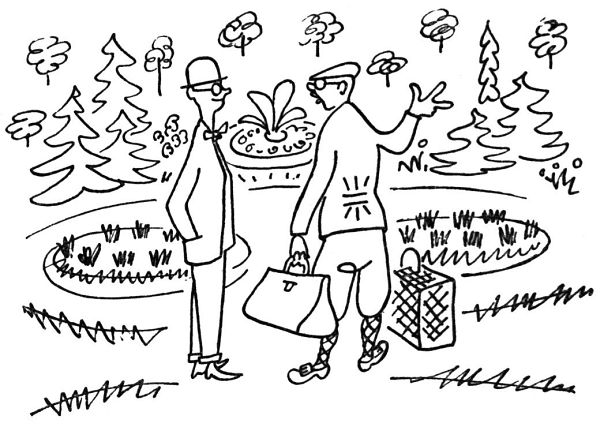
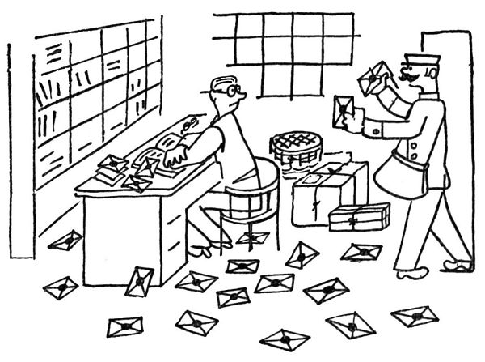
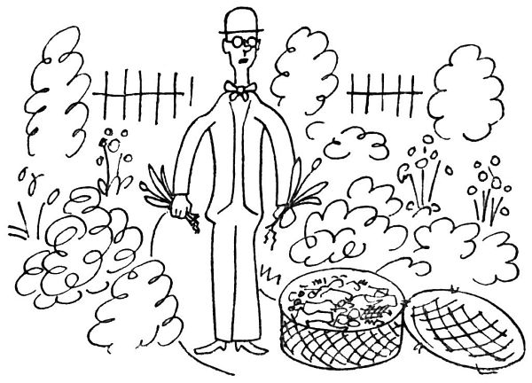
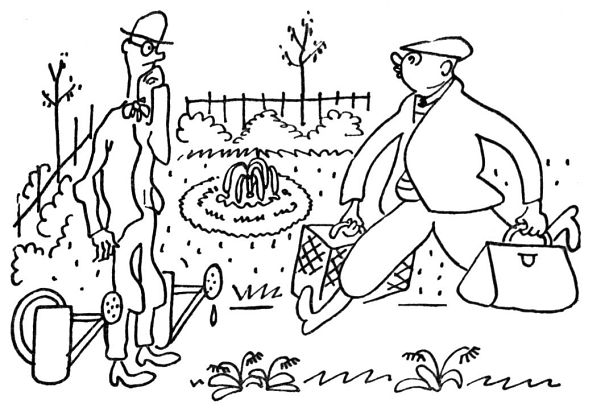
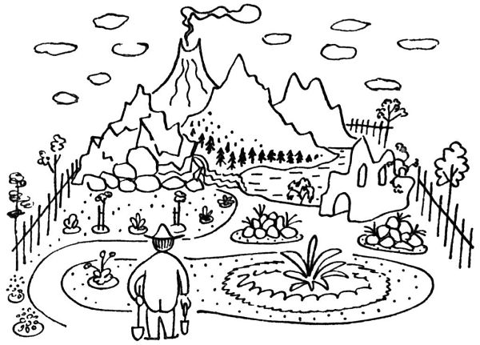

Zahradníkův srpen
Srpen je obyčejně doba, kdy domácí zahradník opouští svou zahradu divů a jede na dovolenou. Po celý rok sice důrazně hlásal, že letos nepojede nikam, že taková zahrádka je nad každý letní byt a že on, zahradník, není takový blázen a trumbera, aby se někde plahočil ve vlaku a po všech čertech; nicméně když uhodí letní doba, prchá i on z města, buď že v něm propukl stěhovavý pud, nebo kvůli sousedům, aby se neřeklo. Odjíždí ovšem s těžkým srdcem, pln obav a starostí o svou zahrádku; a neodjede, dokud nenajde nějakého přítele nebo příbuzného, kterému na ten čas svou zahrádku svěří.
„Koukejte,“ praví, „teď beztoho není na zahrádce vůbec žádná práce; stačí, když se tam jednou za tři dny jen tak podíváte, a kdyby snad něco tento, nebylo v pořádku, tak mně napište kartku, a já přijedu. Tak teda já na vás spoléhám. Jak říkám, stačí vám pět minut, jen co tam mrknete okem.“

Načež odjede, vloživ takto svou zahrádku na srdce ochotnému bližnímu. Tento bližní pak dostane druhého dne dopis: „Zapomněl jsem vám říci, že se zahrádka musí každý den kropit, nejraději v pět ráno nebo k sedmé večer. To nic není, jen přišroubujete hadici k hydrantu a hodinku stříkáte. Prosím vás, konifery musíte pokropit celé a hodně vydatně, a pažit také. Kdybyste někde viděl nějakou plevel, tak ji vytrhněte. To je všechno.“
Den nato: „Ono je strašně sucho, prosím vás, dejte každému rododendronu asi dvě konve odstáté vody, a každé jehličině pět konví, a ostatním stromům asi po čtyřech konvích. Ty pereny, co teď kvetou, potřebují hodně vody – napište mi obratem, co kvete. Odkvetlé stonky se musejí odřezat! Bylo by dobře, kdybyste motyčkou zkypřil všechny záhonky; ona pak půda líp dýchá. Jsou-li na růžích mšice, kupte tabákový výtažek a za rosy nebo po dešti ty růže jím postříkejte. Víc se zatím nemusí dělat.“

Třetího dne: „Zapomněl jsem vám říci, že se musí posekat trávník; tím strojkem to uděláte hravě, a co nevezme strojek, ostříháte nůžkami. Ale pozor! Po posečení se musí tráva dobře vyhrabat a potom vymést koštětem! Jinak trávník vylysá! A zalévat, hodně zalévat!“
Čtvrtého dne: „Kdyby se strhla bouřka, běžte se, prosím vás, podívat na mou zahrádku; prudký liják udělá někdy škody, a je dobře být hned na místě. Kdyby se na růžích ukázalo padlí, posypte je časně ráno za rosy sirným květem. Vysoké pereny přivažte k hůlkám, aby je vítr nepolámal. Tady je nádherně, rostou houby a je krásné koupání. Nezapomeňte denně zalít ampelopsis u domu, má tam sucho. Schovejte mi do sáčku semínka od Papaver nudicaule. Doufám, že už máte trávníky posečeny. Jinak není ničeho třeba než hubit škvory.“

Pátého dne: „Posílám vám bedničku s květinami, které jsem narýpal tady v lese. Jsou to různé vstavače, divoké lilie, koniklec, pirola, plicník, sasanky a jiné. Ihned jak bedničku dostanete, ji otevřte, sazenice pokropte a vsaďte někde ve stínu do mé zahrádky! Přidejte jim rašelinu a listovku! Ihned vsadit a třikrát denně zalévat!! Prosím vás, uřežte vlky na růžích!“
Šestého dne: „Posílám vám expres koš s květinami z přírody… Ihned s nimi do půdy… V noci byste měl jít do zahrádky s lampičkou a hubit šneky. Bylo by dobře vyplet cestičky. Doufám, že vám ten dozor na mou zahrádku nezabere mnoho času a že na ní strávíte příjemné chvilky.“
Zatím ochotný bližní, vědom si své odpovědnosti, kropí, seče, kypří, pleje a obchází s poslanými sazenicemi hledaje, kam by je u čerta vsadil; je zpocen a postříkán od hlavy k patě, s hrůzou pozoruje, že tuhle vadne nějaký chřást a tamhle se polámaly nějaké stonky a tady trávník zrezavěl a že celá zahrádka je nějak jakoby spálená, i proklíná chvíli, kdy na se vzal toto břímě, a modlí se, aby už byl podzim.

A zatím majitel zahrádky myslí s nepokojem na své kytky a trávníky, špatně spí, nadává, že mu ochotný bližní nepíše denně raport o stavu zahrádky, a počítá dny do svého návratu, posílaje obden bednu s květinami z přírody a dopis s nějakými dvanácti naléhavými rozkazy. Konečně se vrací, ještě s kufry v rukou se řítí na svou zahrádku a rozhlíží se vlhkýma očima –
Ten lajdák, ten vrták, ten prasák, myslí si hořce, ten mně tu zahradu zřídil!
„Děkuju vám,“ řekne suše bližnímu a jako živá výčitka se chopí hadice, aby pokropil zanedbanou zahrádku. (Ten blbec, myslí si v hloubi duše, tomu tak něco svěřit! Jakživ už nebudu takový blázen a trumbera, abych jel na letní byt!)

Copak květiny z přírody, ty už zahradní fanatik nějak vyrýpe z půdy, aby je vtělil do své zahrádky; horší je to s jinými přírodními objekty. Zatrápeně, myslí si zahradník pohlížeje na Matterhorn nebo na Gerlachovku, tuhle horu kdybych tak měl na své zahrádce; a tady ten kousek pralesa s lesními velikány, a tu paseku, a tady tu horskou bystřinu nebo raději toto jezero; tahle kyprá louka by se taky pěkně dělala na zahradě, rovněž kousek mořského pobřeží, a taková zřícenina gotického kláštera by se mně taky šikla. A chtěl bych mít tamhletu tisíciletou lípu, a tahle antická fontánka by se u mne vyjímala docela pěkně; a což stádo jelenů nebo nějaký ten kamzík, nebo aspoň tato alej prastarých topolů, tamhleta skála, tady ta řeka, tamten dubový háj nebo ten běloučký a modrý vodopád či aspoň tohle tiché a zelené údolí –
Kdyby to nějak šlo, udělat smlouvu s čertem, který by zahradníkovi splnil každé přání, prodal by mu zahradník svou duši; ale ten chudák čert, jářku, by tu duši zatraceně draho zaplatil. „Chlape mizerná,“ řekl by konečně, „nežli bych se musel takhle dřít, táhni raději do nebe – beztoho jinam nepatříš.“ A švihaje zlostně ocasem, až by jím zurážel květy řimbaby a zápleváku, šel by po svém a nechal by zahradníka i s jeho neskromnými a nevyčerpatelnými žádostmi.
Vězte, že mluvím o zahradníkovi zahradním, a ne o těch sadařích a košťálnících. Ať si sadař září nad svými jablíčky a hruškami, ať se raduje košťálník z nadživotní velikosti svých kedluben, turků a celerů; pravý zahradník cítí ve všech kostech, že srpen, to už je taková doba obratu. Co kvete, to už honem hledí odkvétat; teď ještě přijde doba podzimních aster a chryzantém, a potom dobrou noc! Ale, ale, ještě ty, zářící floxe, kytičko farská, ty, zlatý starčku a zlatobýle, zlatá rudbekie, zlaté harpalium, zlatý slunokvěte, ještě vy a já, ještě se nedáme, kdepak! Po celý rok je jaro a po celý život je mládí; pořád je z čeho kvést. To se jen tak říká, že je podzim; my zatím rozkvétáme jiným květem, rosteme pod zemí, zakládáme na nové výhonky; pořád je co dělat. Jen ti, kdo mají ruce v kapsách, říkají, že se to obrací k horšímu; ale kdo kvete a nese plod, i kdyby to bylo v listopadu, neví nic o podzimu, nýbrž o zlatém létě; neví nic o úpadku, ale o rašení. Podzimní astro, drahý člověče, rok je tak dlouhý, že ani konce nemá.